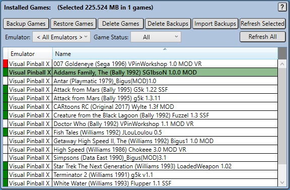
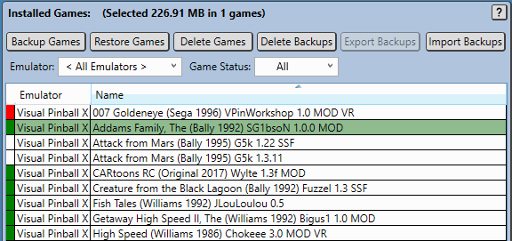
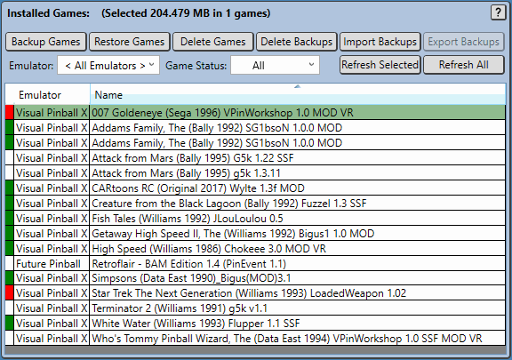
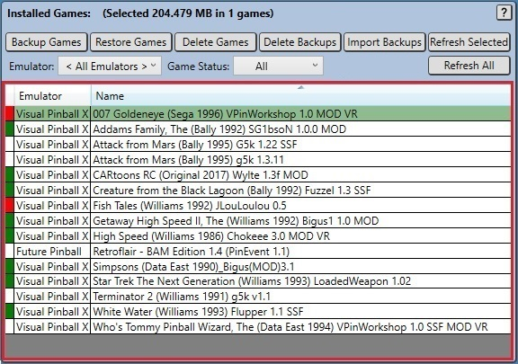
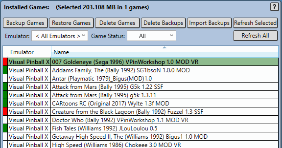

Virtual Pinball Backup Manager - managing your backups, one game at a time
Overview
This panel displays all games that are installed in the Pup database in a sortable table.

Entries within this table have a colour coded first column marker used to indicate the status of backups for the corresponding game. Users may select one or more rows in this table to operate on using the buttons seen across the top of the table. The most recently selected row is treated as the primary row selection and information about this row is displayed in other panels within the application.
In the screenshot shown, the first three rows are selected.
The first row is a game that has been backed up but the contents of the backup does not match the contents of the game on disk - shown with a red first column marker.
The second row is a game that has been backed up and the contents of the backup matches the contents of the game on disk - shown with a green first column marker. This row is bolded and shaded in as it has also selected by the user.
The third row is a game that has not been backed up - shown with a white first column marker.
Note that, just like in Pinup Popper, it is possible to have more than one game with the same Name, this generally occurs when the same game is stored in multiple sub-folders of the configured emulator Games Folder, but could also be the result of manual renaming of the game within Pinup system.
Hovering over a game marked as not matching the backup (first column marker shown in red) will provide a tooltip describing the differences between the backup file and the files currently installed. This allows the user to better understand these differences so that they can better determine how to resolve it.
In the example below, the game 007 Goldeneye (Sega 1996) VPinWorkshop 1.0 Mod VR is being hovered over (screen capture does not show the pointer icon) and shows that the POV file has differences and that several Pinup Database entries differ also.

Changes shown in the tooltip are broken into the following categories:
Selected Game Filter Variables
Custom filter variable (extracted values, and user defined overrides) differ between the live system and backup. Management of the selected games filter variables are discussed in Selected Game Filter Variables Panel.
Selected Game Custom Filters
Custom filters created by the user to supplement the built in filters, differ between the live system and backup. Management of the selected games custom filters is discussed in Selected Game Custom Filters Panel.
Selected Game Content
Game content such as game files or game related entries in merged files (such as B2STableSettings.xml) differ between the live system and backup.
Selected Game Pinup Details
Pinup database values for the game differ between the live system and backup.
Selected Game Registry Content
Game specific registry settings differ between the live system and backup.
The tooltip will describe the nature of the differences between the live system and backup for each difference.
The Filter by Emulator combo box allows users to filter the games displayed in the game details table.
There are two filters available:
Emulator allows users to limit displayed games based on the emulator that game is using.
Game Status allows users to limit displayed games based on the games relationship to its backup.

Sorting Games
The headings in the game list allow rows to be sorted. Clicking on the headers will adjust row sorting.
Sorting can be performed on both the Emulator and Name columns in either an ascending or descending order. An arrow identifies the sort order being used.
Five buttons across the top of the Installed Games panel, plus two additional Refresh buttons on the right hand size of the panel provide the key operations that are perfomed within VPBM. With the exception of the Import Backups and Refresh All buttons, operations are performed on the selected games withing the Installed Games panel.
The operations performed by these buttons and described below:
Backup Games
Pressing this button triggers processing to loop through all selected games and generate new backup files for them (if required), these backup files will be stored within the configured backup directory within a subdirectory based on the games emulator. Backups contain a full set of files and metadata used to restore the game when required, this content includes:
All emulator specific game file content, such as (for VPX) rom files, backglass and POV files, and (for Future Pinball) BAM config files. These files will vary by emulator.
Pinup Pup Packs - for games with pup packs.
Pinup Player Media - for display within Pinup Popper.
A game manifest file (manifest.json) which identifies and characterises every file within the backup file.
A game details file (gameDetails.json) which stores every piece of game information found in the Pinup database Games table for the game.
A registry settings file (registrySettings.json) which stores and game specific emulator registry settings.
A game codes file (gameCodes.json) which stores details of extracted game codes, as well as any overrides to thesae codes set by the user.
A custom file filters file (customFilePaths.json) which stores filter information to locate and additional 'game specific' emualtor related files to be stored.
Restore Games
Pressing this button triggers processing to loop through all selected games and restoring them to a state consistant with the backup file (if required).
This action effectively performs the reverse of the Backup Games button.
All game and Pinup files are restored, additionally the Pinup database is updated to match the stored content and and registry settings defined for the game are also updated. The restore process first deletes any previous files and content used by the game prior to restoring content found in the backup in the deleted contents place. The restore operations delete processing does not delete files used by other games, however files that are restored will overwrite corresponding content shared with other games - this means that performing a restore can result in other games content changing.
Delete Games
Pressing this button deletes the game content, removing the game entirely from the current system for all selected games. Any files belonging to the game that are shared by other games are not deleted. For instance, if a ROM is shared by two versions of a game, then deleting the first version will not delete the ROM as a second version is using it also.
Backup files are NOT deleted meaning that they can be re-imported by using the Import Backups button, or by dragging a backed up file from the Windows file explorer onto the Games Table. A warning dialog is provided to ensure that users confirm the delete action is required.
Delete Backups
Pressing this button deletes all selected game backups.
Import Backups
Pressing this button results in a file dialog being opened allowing games to be imported into the system. The process used to import games is:
Click the Import Backups button.
In the resulting Import VPBM Backups dialog, select one or more backups to restore.
Press the Open button in the Import VPBM Backups dialog to trigger the import.
Alternatively, games can be imported by using the following process:
Use the Windows File Explorer to locate the backup file(s) to import and select them.
Drag the files onto the VPBMsInstalled Games Table (as highlighted in red below) and drop them to
trigger the import.

Refresh Selected
Pressing this button results in a rescan of all content found in the selected rows set of games. This behaves similarly to the Refresh menu option in the File menu, but only for those rows selected.
Refresh All
This performs the same processing as the Refresh menu option in the File menu, effectively refreshing content for all rows.
Installed Games Context Menu
The main operations provides by the Games Table Control Buttons section above are also available via a right mouse button context menu within the Games Table.

Progress Reporting
Processing triggered by these buttons can take some time, as such a progress bar is displayed across the bottom of the application while operations are occuring as shown below.